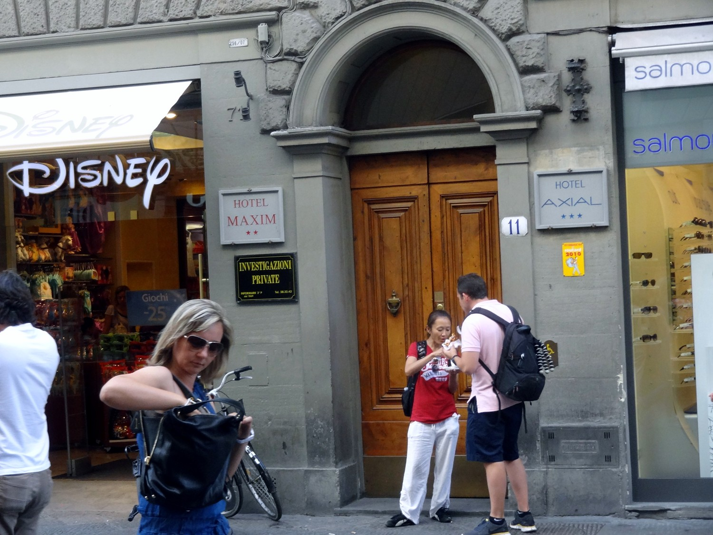
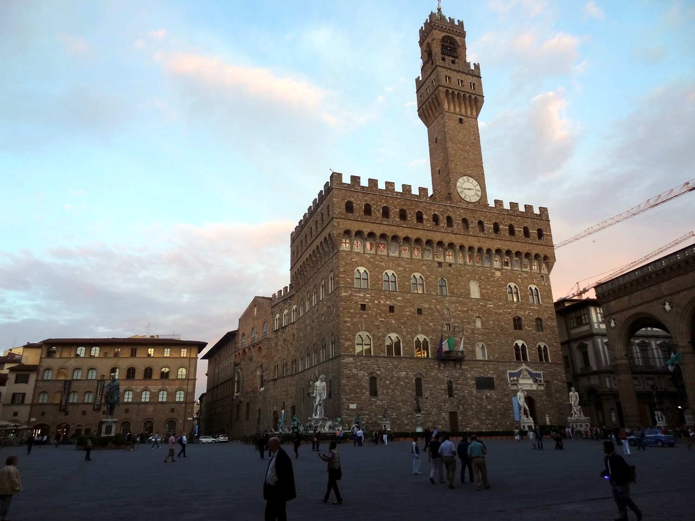
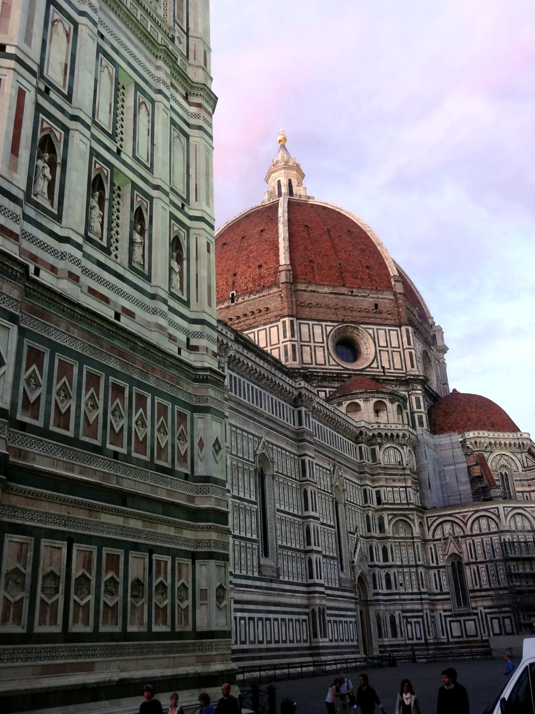
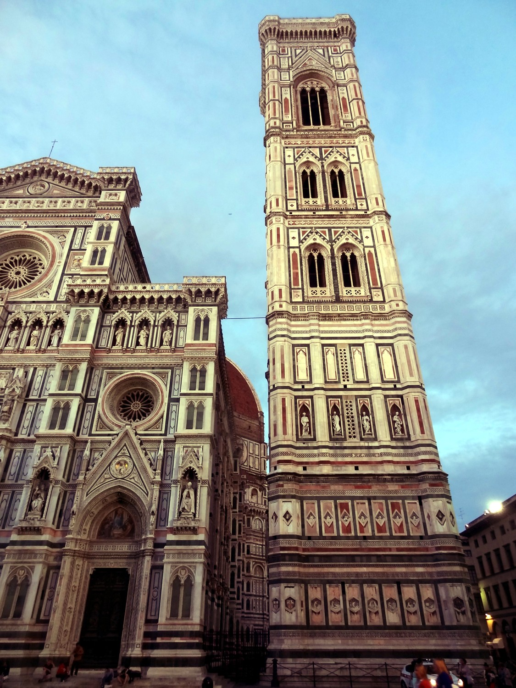
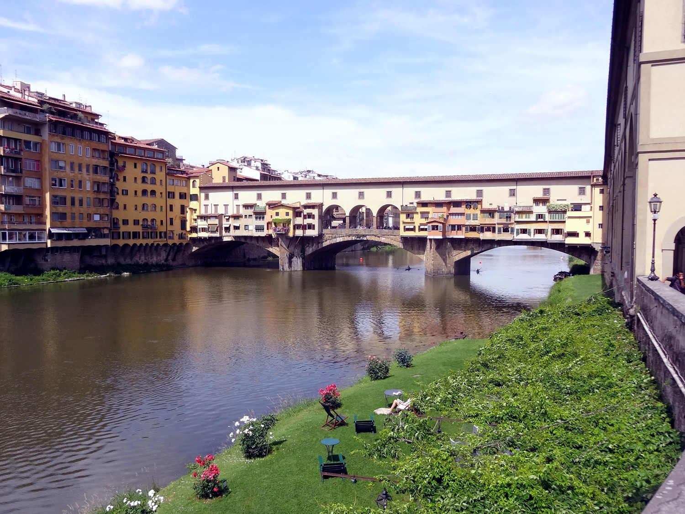
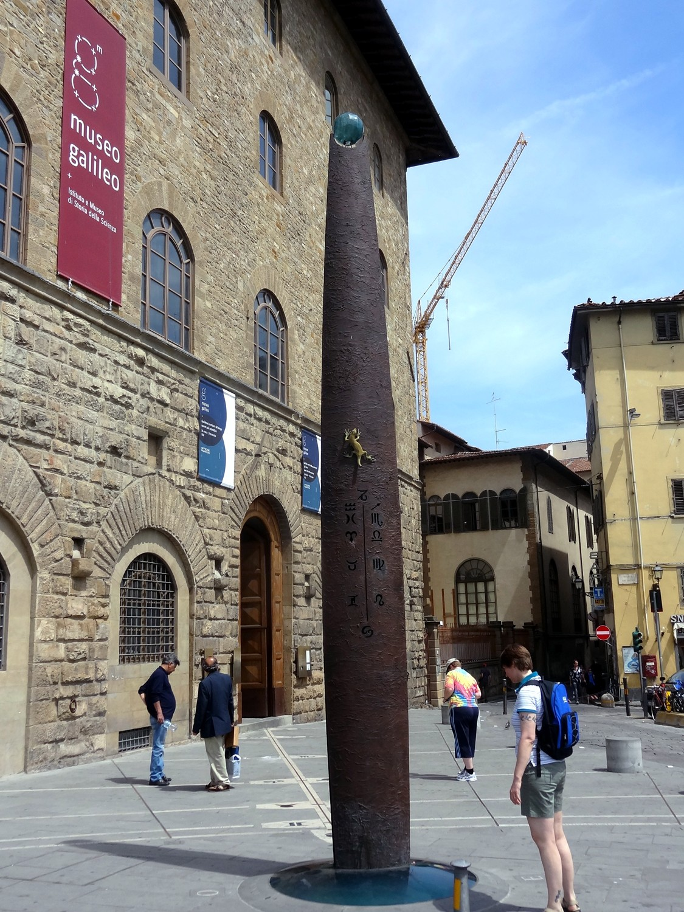
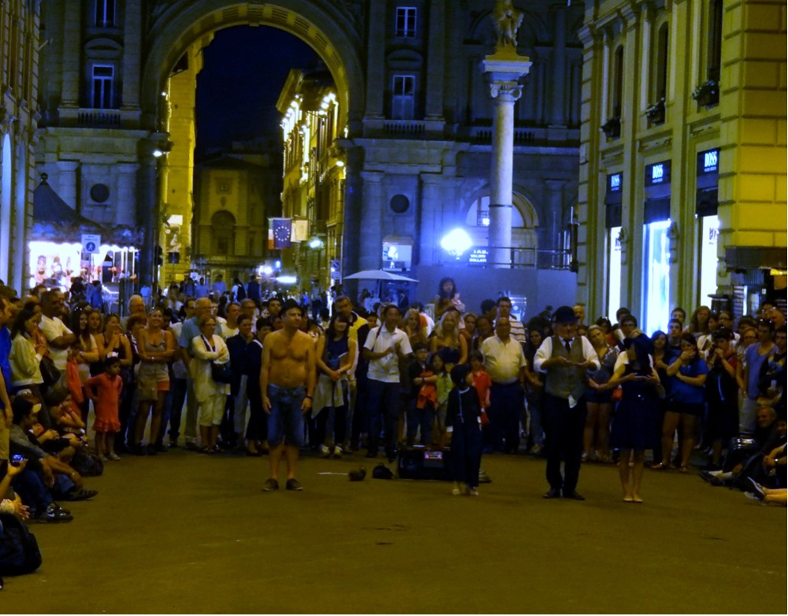
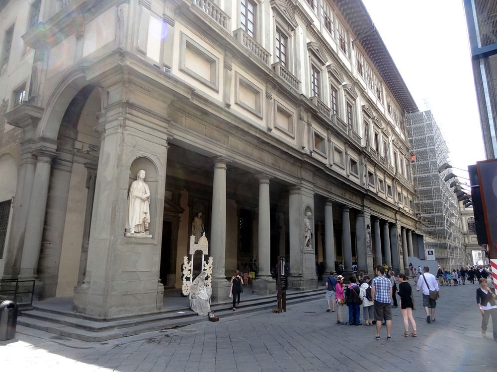

|
 |
| Had booked a flight from Rome to Florence,
not realizing it's 1 1/2 hours by bullet train. Once Elizabeth Buie
pointed that out, I found the 165-mph trains so cheap that it made sense
to walk away from the fare, especially considering the hassle of flying
and the cost of airport buses/trains. The hotel Axial turned out to be
the rennovated second floor of the scuzzy interior of a building in the city center,
putting absolutely everything in walking distance. The roads here are in
practice are pedestrian malls, the way roads in India are in practice
farms. The other hotel was the third floor. I was pretty tired after the week in Rome. I had my no-check airplane stuff--backpack and wheelie--and separately a friend's present in a paper bag. I dropped the bag in the bus terminal in Rome. Somebody pointed it out--a bum was kicking it around to see if it was empty. I dived and retrieved it. He shrugged haplessly. The landscape was uninspiring. I drowsed through a lot of the trip. I thought literally five times that I should put the bag in the backpack or I'd leave it on the train, but I didn't, and I did. When we arrived, I got halfway down the platform then ran back and looked around the car. Too late. I'm still mad. |
|
 |
| City hall. Florence is Mediciland. The
family grew so rich and powerful through trade that the Pope had to
invent a title to match--Grand Duke of Tuscany. Then they grew even
richer by collecting taxes. They financed the Rennaissance. What if Bill
Gates had funded art rather than public health? Since there was no one
like them, the Medicis married each other, because odd-looking, and the
line died out. This is unlikely to happen to Bill. The building is four
blocks up from the hotel, and the first thing that I encountered. |
|
 |
| Basilica Santa Maria de Fiori. Heard church bells coming from the other way, so I walked four blocks on the other side of the hotel and found....this. |
|
 |
| I guess I didn't get a picture of the
exterior of the Accademia della Arte, and they don't let you take
pictures inside. So I saw David with his out-of-proportion head and hands
symbolizing the mind and power of God. Florence comnissioned the
statue expecting a victory scene involving someone triumphing over
something,, but Michaelangelo
decided that David vs. Goliath was a good metaphor for Florence triumphing over stronger
enemies like Sienna and Milan. David looks wary but relaxed and
unselfconsciously confident. A fig leaf was added in Victorian times
and is now separately exhibited in London. To be honest, I barely glanced at the paintings and sculpture. Rennaissance paintings are cluttered--there are always one to two dozen people--and yield nothing impressionistically. You have to focus on each little bit of face or clothing and look for exquisite details.I want the whole to speak to me. Instead I spent all my time in the other half of the museum that you never hear about, which contains period musical instruments: a marble lute, a cello with yarn for strings, and yes, a muted post horn. Wish they sold CDs of the performance recordings! NPR has a virtual program I call Music You Can't Have, which plays great stuff that is is simply not available and you'll never hear again (I did track town a recording of Navajo folk singer Sharon Burch, though). The gift shop didn't sell the one-representative-piece-from-each -century-from-the-1400s-forward CD. I hunted all over the web for Marco di Gagliono's (1500s) stunning Missa in Assumptione Beatae Mariae Virginis. There's only one commercial recording, and they massacred it. |
|
 |
| The Ponte Veccio bridge has a building on each side that allowed the Medici to walk safely from palace to office complex. Today, these are jewelry stores. Saw sculling down the river--they still have horators with drums. |
|
 |
|
The museum has Galileo’s middle finger. Presumably he left it to Church. Galileo discovered the distance traveled by a moving object scales as the square of the elspsed time. (Newton filled in all details, which required the invention of calculus., which he did although Gauss did it at the same time and arguably Archimedes was there first. The museum has several of his telescopes, and a lot of trippy exhibits--during the renaissance nobels enjoyed splashy science demonstrations such as the Leyden jar and Wimshurt machine. There are also huge gold-plated analog computers for the motions of the planets. How did people in the 1600s create world maps that are approximately correct? How much time and how many data points did it take to map the outline of North America? |
|
 |
| Street performers generated loud yucks in the
middle of the night. So I stayed up to see them, but couldn't
figure out what was so funny. |
|
 |
| Exterior of the Uffizi--the Medici's office
building. Another endless museum. Highlights--the room with the mother
of peal and lapis lazuli dome with a white crystal hole for the sun.
Boticelli's Venus--were the original colors really that muted? Turns out
to be conjecture that it's Venus. And the famous painting of the ugly
nobleman--forgot the name. He had a broken nose and so was shown
in profile. He's lost an eye, and was said to have had his nose
broken so the could see anyone sneaking up on his blind side.
Killing your brother makes you paranoid. His pre-deceased wife is
painted ghostly white. The tour guides in Florence had annoying agendas. The Accademia guide was at pains to point out that 3-d perspective and everything else that mattered in Western culture were invented here. (The Italians have a name for this--belltowerism. Everybody identifies fiercely with their city and hardly at all with the country. A Spanish colleague made a similar comment about Spain--you're a Castillian or a Catalonian or Asturian, but nobody's really a Spaniard. He said the best thing about the US, which he was visiting at the time, was that everybody was emphatically an American. I guess that's true, although we're at each other's throats about what that means.) And she told us that while Berliscone was a scoundrel, Monti wasn't a politician at all--no charisma hence illegitimate (which made me think of Argentina) The Uffizi guide (who had a German accent) was at pains to point out that Americans oversimplify things and are obsessed with David. The first is probably a codeword for our seeing everything as a struggle between good and evil, creating a moral necessity for military intervention. I'm not sure what the dark hints about the obsession with David were about. I thought of explaining to her that the world really is that simple, and that anyone who complexifies it is trying to scam you for financial gain, or in the case of academics, personal glory, and can safely be ignored. Every American has this baked into their heads to some degree. Regarding David, I told her that to Americans, Michalangelo means three things: David, the Sistine Chapel, and St. Peter's Basilica. We know he's done other things, but couldn't name them. She then nominated Machiavelli as an oversimplification victim. I could have challenged her, having read The Prince and The Discourses end to end in grad school. My takeway was 1-To keep power you must be feared but not hated, and 2-Never hire mercenaries. If you're weak enough to need them, they're strong enough to take you. I thought of this recently during a National Geographic special interviewing a drug smuggler in LA who had hired the Crips to protect him. |